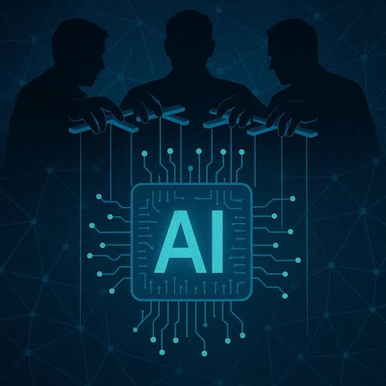

💻
Herramientas digitales
Asistentes, traductores y plataformas adaptativas amplían los recursos disponibles.

Bien utilizada, la IA explica un tema de varias formas, genera ejercicios de práctica, ayuda a organizar ideas y da retroalimentación inmediata.
Mal utilizada, se convierte en un atajo que impide aprender. La diferencia está en usarla para comprender y no solo para copiar resultados.
Asistentes, traductores y plataformas adaptativas amplían los recursos disponibles.
Analizar y comprobar la información antes de utilizarla es indispensable.
Datos, programación y lógica son la base para crear soluciones con IA.
Conocer estas tecnologías abre oportunidades en estudios y trabajo.
Analiza datos para descubrir patrones y apoyar decisiones.
Diseña, entrena y pone en marcha modelos inteligentes.
Protege sistemas y datos frente a ataques cada vez más sofisticados.
Integra mecánica, electrónica y programación en máquinas inteligentes.
Crea las aplicaciones y plataformas donde vive la IA.
La educación tecnológica es un excelente punto de partida. Estas áreas se conectan directamente con la IA:
